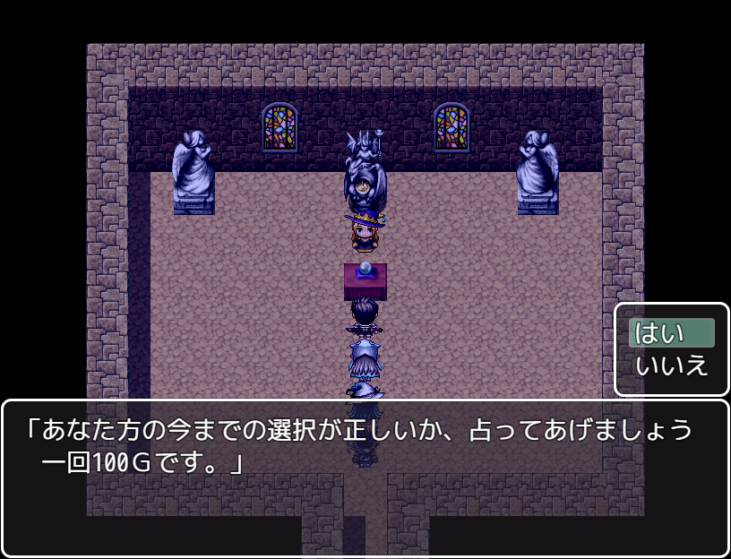

占いイベント
 占い屋に占ってもらうと、今までの選択肢で得た隠しパラメータ(仮名で英雄度にでもしておくか。。。)の点数が分かる。
占い評価が素晴らしいになると･･････
町の倉庫などにある不思議な像が･･････・
覚醒して、力をくれるイベントが発生する。
不思議な像はそれぞれのキャラクターに対応した像がどこかの町にあるので 探してみると良いかも。
そこそこ、良い力をくれます。ちなみに一名だけ違う形で力を手に入れるよ